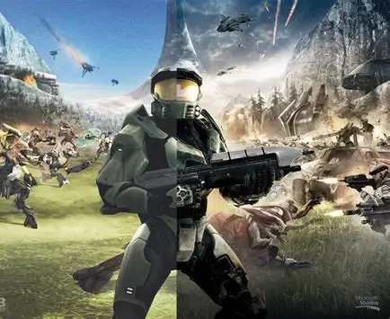

Yo empece con los videojuegos a temprana edad pero no en mi casa, aveces cuando mis papas y yo ibamos a casa de mis tios yo veia como mis primos jugaban con una Consola que era la Nintendo 64 y jugaban al Mario Kart 64 me acuerdo muy bien de esas ocasiones,
con mucho cariño y tiempo despues por que solo mis interacciones con los videojuegos eran a traves de mis primos, mi papa compro una Consula la cual fue mi primera consola de juegos y esta fue la Xbox 360 la segunda consola fabricada por Microsoft
y el Juego con el que mi papa compro la 360 fue el Halo Anniversary que venia junto con la consola.
-- ATTENTIVE BULLDOGS

Halo
Halo fue mi primer juego al que le dedique horas al salir de la primaria, pasaba muchos ratos jugando y explorando el como funcionaba la consola por que veia a mi papa usarla y yo tambien queria aprender
en ese entonces a mi papa le habia gustado la saga y compro las continuaciones del Juego como: Halo 3 (el Halo 2 nunca lo jugue de pequeño si no hasta ya grande jaja), Halo 4, Halo 3 ODST, Halo Wars (goty), etc.
Claro tambien tenia otros juegos pero en lo principal la saga de halo me habia marcado, ya que tambien lo jugaba con mi Mejor Amigo lo cual me dejo bastantes momentos de mi infancia que recordare para siempre.